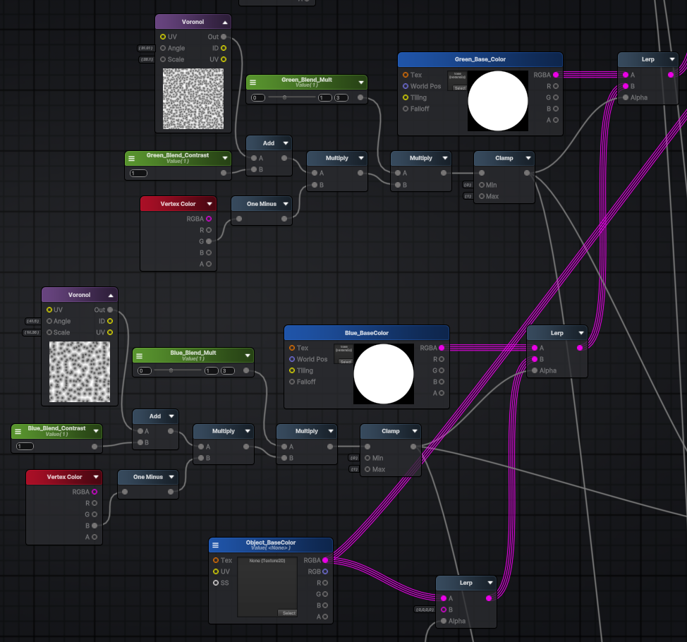
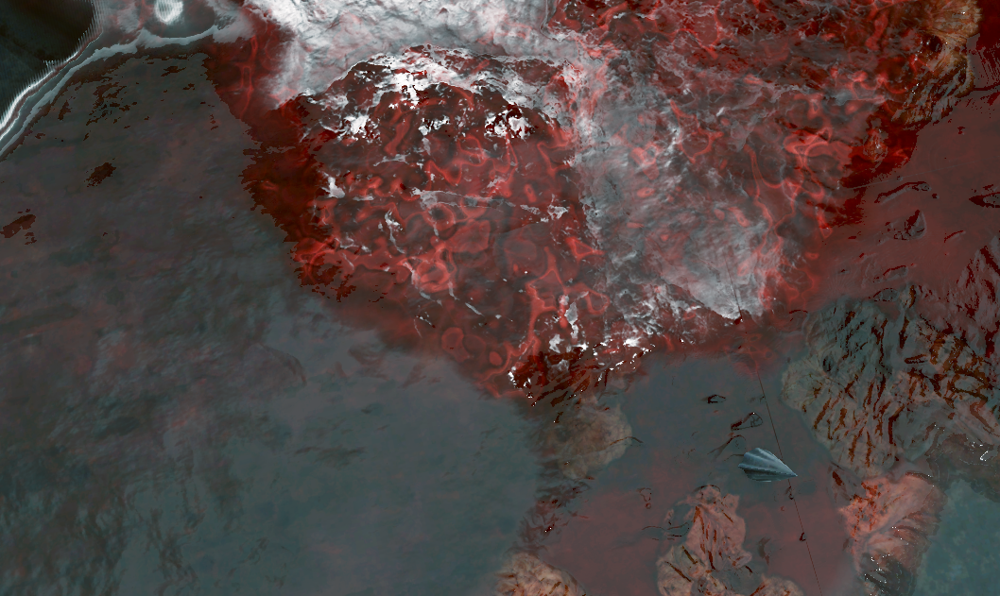
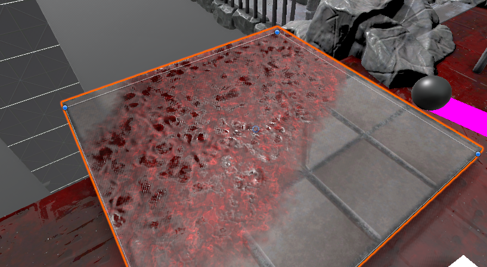

Back
Cleaning Hell, One Vertex at a Time
Technical Art Work-In-Progress of 'Infernal Cleaner'.
In this post, we're diving into some of the technical challenges and solutions behind the scenes of our game, Infernal Cleaner. Here's a look my approach to runtime vertex painting, materials and additional VFX. We will be breaking down each core element.

// Paint-vert: result = Sphere Overlap Check on a raycast.
// This is within a coroutine.
foreach (var col in result)
{
if (!col)
continue;
col.TryGetComponent(out Cleanable cleanable);
if (cleanable)
{
Vector3 returnColor = Global.I.PaintVert(
col.GetComponent<MeshRenderer>(),
hit.point,
// Paint strength depending on number of objs being painted
paintStrengthNormal * result.Length,
paintRadius,
//
cleanable.KdTree);
}
// Paint 1 mesh per frame
yield return null;
}
1. Runtime vertex painting
I chose to implement vertex painting as our blood painting method over render texture method due to it's simplicity, but it’s notwithout its share of hurdles:
Problem:
- No GPU instancing, mesh data different for each asset.
- Introduces additional 3D asset requirements.
- High CPU workload issue when vertex painting.
- Not compatible with traditional LOD work-flow
Solution:
- I optimised the vertex painting algorithm by using coroutine to distribute task over multiple frames, as well as implementing a spatial partitioning algorithm (k-d tree) to efficiently reduce the size of our loop when calculating vertex painting and fall-offs.
- k-d tree is particularly efficient when it comes to finding nearest neighbour vertices. This eliminates all of our CPU-bound vertex painting performance issues.
- Splitting tasks over multiple frames with coroutines.
// the KDTree was generated during Init()
KDQuery query = new KDQuery();
query.Radius(tree, originLocal, radius, results);
float redAmountDelta = 0f;
float greenAmountDelta = 0f;
float blueAmountDelta = 0f;
foreach (int i in results)
{
Vector3 vertex = vertices[i];
float distanceSqr = (originLocal - vertex).sqrMagnitude;
if (distanceSqr < radiusSqr)
{
float proximity = 1.0f - Mathf.Sqrt(distanceSqr) / radius;
float originalRed = colors[i].r;
float originalGreen = colors[i].g;
float originalBlue = colors[i].b;
float redChange = channelStrength.x * proximity * Time.deltaTime;
float greenChange = channelStrength.y * proximity * Time.deltaTime;
float blueChange = channelStrength.z * proximity * Time.deltaTime;
float newRed = Mathf.Clamp01(originalRed - redChange);
float newGreen = Mathf.Clamp01(originalGreen- greenChange);
float newBlue = Mathf.Clamp01(originalBlue- blueChange);
redAmountDelta += originalRed - newRed;
greenAmountDelta += originalGreen - newGreen;
blueAmountDelta += originalBlue - newBlue;
// Update vertex color array
colors[i].r = newRed;
colors[i].g = newGreen;
colors[i].b = newBlue;
}
}
...
2. Master Material
Problem:
- Blood layer needed to be consistent across multiple mesh with different texel density.
- 15 texture samples...madness
- lightmap bake will pick up the redness from mesh
The master material is pretty simple, it lerps 3 layers of paint on red, green and blue channels. Those channel are then use as masks for the tri-planar projection of different materials of blood (this uses quite a lot of texture samples). I would like to optimise thise if time allows.
Solution:
- "Bake-Mode" in shader (static switch on paintable layers) that bypasses blood layer blending.
- Triplanar texture sample for blood layers to create consistency across different mesh.


Layers of blood (RGB-Channel)
Paintable blood with roughness variations.

This effect was implemented on master shader's emission output. When the player activates the
ability, we iterate through all the material variants used and simply call SetFloat().
3. Visual effects
Various VFX were implemented to enhance our vertex-painting effect and mechanics.
- An ability to highlight dirty surfaces.
- Wetness puddle VFX with slow decay. It spawns where water stream collides with, will expand this further to create wall and ceiling variants.
- Rivulet and droplet VFX which are spawned on contact point when we clean surfaces.

VFX: Puddle
- Object-Pooled Decal Projector
- SetFloat() on raycast to increase puddle size (erosion map lerp)
Puddle Decal Shader
- We're modifying only Normal, Metallic, and Smoothness.
- SetFloat() on raycast to increase puddle size (erosion map lerp)
VFX: Droplets
- Spawn on raycast hit location, using particle system from an Object-Pool
Thanks for reading! This document is a Work-In-Progress, I'll add more details soon!